00Quick start: the 10-minute checklist
Follow this in order. Every step was run and checked on a real Mac while writing this guide.
- Sign up at console.typesafe.ai (Google or email).
- Create an API key at console.typesafe.ai/keys.
- Save the key permanently so every new terminal has it:
echo 'export TYPESAFE_API_KEY="paste-your-key-here"' >> ~/.zshrc source ~/.zshrc - Make your first call with curl (no install needed):
bash examples/first_call.sh - Create a Python virtual environment and install the SDK:
cd ~/typesafe-easy-guide python3 -m venv .venv source .venv/bin/activate pip install typesafe-sdk - Run the full example:
python examples/support_triage.py - Optional, for Claude Code users: install the agent skill (see section 5).
- Optional, only when your app must write text: add a Groq key (see section 11).
| Key | Do I need it? | Why |
|---|---|---|
TYPESAFE_API_KEY | ✅ Yes | Every Jev call goes to api.typesafe.ai and needs this key. It's the only key the examples use. |
| Claude / Anthropic API key | ❌ No | Claude Code runs on your Claude login, not an API key. You'd only need one if your own app code called Claude. |
GROQ_API_KEY | ○ Optional | Only for the "big LLM" step: writing replies or handling hard cases. Groq's free tier works fine for this. |
01The 30-second idea
Most people use big chat AIs (ChatGPT, Claude…) for everything. That's like hiring a professor to tick checkboxes. It works, but it's slow and pricey, and the professor answers in paragraphs that your app then has to untangle.
Jev is a different kind of AI. It doesn't write. You ask short questions, and it answers with a number or a pick from your list, ready for your code.
Think of an exam: a chat AI writes an essay, while Jev fills in a multiple-choice answer sheet. Answer sheets are much faster to fill in and to mark.
Jev is a System One model: it takes a state (text or JSON) and a map of typed questions, and returns typed answers with calibrated probabilities. It doesn't generate tokens of prose.
The output is constrained by construction: a Choice can only return one of your option keys, a Noul is always a float in [0, 1], and a Score is always a position on your levels. No JSON parsing, no retries for malformed output.
You're billed per input token. Output tokens are free.
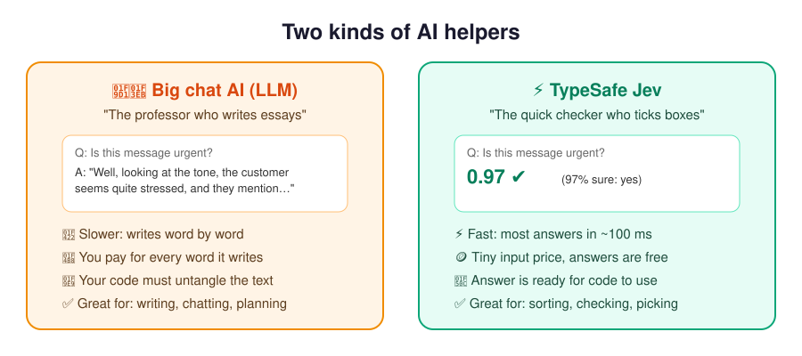
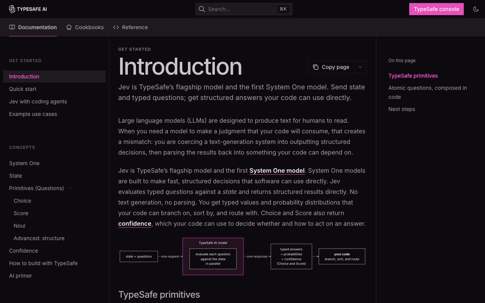
02How Jev works
What happens between sending a request and getting numbers back.
Picture a very quick-reading assistant who is handed one folder (your state) and a sheet of questions.
- They read the folder once.
- They answer every question on the sheet at the same time, without letting one answer affect another.
- For each answer they also say how sure they are. "90% sure it's the tech team" is more useful than just "tech team".
They never write you a letter. You get a filled-in form back, and your code reads the form.
- One endpoint:
POST https://api.typesafe.ai/v1/systemone, authenticated withAuthorization: Bearer $TYPESAFE_API_KEY. - State is ingested once, and every question is evaluated against it in parallel. Questions can't see each other's answers.
- Question IDs (your map keys) are for your code only and are not sent to the model, so put the full meaning in
instructions. - Training: RLCD (reinforcement learning for calibrated decisions), rather than RLHF (chatbots) or RLVR (reasoning models). Probabilities are optimised to match real outcome rates.
- Same weights for everyone: Jev isn't fine-tuned on your data. You adapt it through state, instructions and criteria.
The request and response, field by field
// REQUEST
{
"model": "jev-latest", // alias → jev-1.13.0
"state": "Hi, I've been trying to
connect my Stripe account for 3
days ... Please help ASAP.",
"questions": {
"is_urgent": { // your ID
"type": "noul",
"instructions": "The message conveys
urgency or time-sensitivity"
},
"department": {
"type": "choice",
"instructions": "Which team should
handle this",
"criteria": {
"billing": "Payment or subscription issues",
"technical": "Bugs or integration problems",
"sales": "Pricing or account questions"
}
}
}
}// RESPONSE (a real run, Sept 2026)
{
"model": "jev-1.13.0", // exact version
"answers": {
"is_urgent": {
"type": "noul",
"noul": 0.99 // P(yes)
},
"department": {
"type": "choice",
"choice": "technical", // top option
"confidence": 0.78, // how peaked
"probabilities": {
"technical": 0.85,
"billing": 0.15,
"sales": 0.0
}
}
},
"usage": {
"input_tokens": 376, // billed
"output_tokens": 57 // free
}
}Model facts (jev-1.13, as of Sept 2026)
| Thing | Value | What it means for you |
|---|---|---|
| Price | $0.042 per 1M input tokens · output free | A typical support ticket (~400 tokens) costs about $0.000017. |
| Rate limits | 250,000 tokens/s · 1,200 requests/min | Over the limit you get 429. The SDKs retry with backoff automatically. TypeSafe says these limits may change as demand grows. |
| Context | 64k tokens per request; 32k for state + the longest question | Lots of questions fit in one call. Keep the state focused. |
| Input | Text only: a string, JSON object or array | Convert images, audio and PDFs to text first. |
| Aliases | jev-latest, jev-preview | Aliases move to new versions. Pin jev-1.13.0 if you've tuned thresholds on it. |
| Languages | English is best | Other languages work, but test on your own content first. |
| Your data | Not used for training | Zero data retention is available on enterprise plans. |
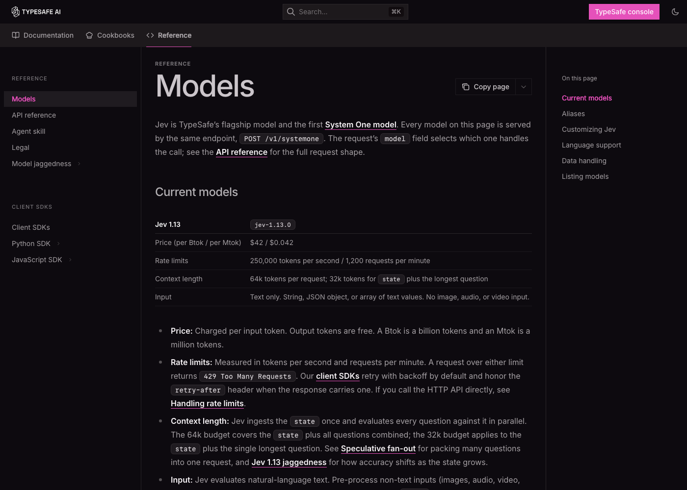
03The 3 tools you'll use
Every Jev question is one of these three types. That's all there is to learn.
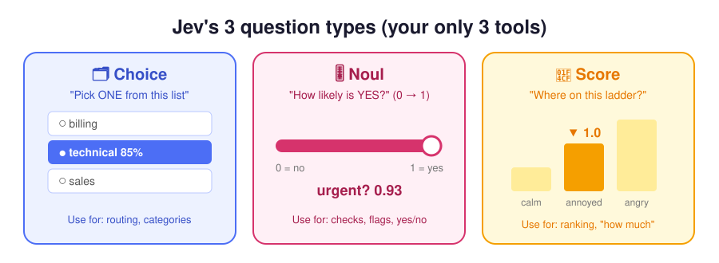
| Tool | You ask | You get | Limits | Example |
|---|---|---|---|---|
| 🗂️ Choice | "Pick ONE from this list" | choice, probabilities (summing to 1), confidence | up to 255 options | Which team handles this ticket? |
| 🎚️ Noul | "Is this true?" | noul: 0 (no) → 1 (yes) | optional true/false criteria | Does the customer want a refund? |
| 📏 Score | "Where on this ladder?" | score (e.g. 1.4), probabilities per level, confidence | 2–10 ordered levels | How angry is the customer? |
Choice = a restaurant waiter asking "chicken, fish or veg?". You get one pick, plus how torn you were.
Noul = a light dimmer for "yes". 0.99 means clearly yes, 0.02 clearly no, and 0.5 means "can't tell", not "a bit".
Score = a pain scale at the doctor's: 0 calm, 1 annoyed, 2 furious. A 1.4 means "between annoyed and furious, leaning annoyed".
Choice returns the argmax option and the full distribution. Always add a none/other option when nothing may fit.
Noul returns P(yes) with no separate confidence field. When several labels can apply at once, use one Noul per label, not a Choice.
Score returns a probability-weighted position on your levels. Each level must describe a concrete, self-contained situation. Don't interpolate exact magnitudes between levels.
Writing good questions
| Principle | ❌ Weak | ✅ Strong |
|---|---|---|
| One narrow judgment per question | "Is this ticket bad?" | "Is the customer asking for a refund?" + "Is the customer threatening to cancel?" |
| Say the exact condition (Jev reads literally) | "Urgent?" | "The message says the problem is blocking sales or needs a fix within a day." |
| Point at the field you mean | "Is the last message polite?" | "Is ticket.messages[-1].text polite?" (a backticked path into the state) |
| Keep instructions and criteria aligned | Noul where true means "no refund" | true = asks for a refund, false = doesn't |
| Use structure for long rubrics | One 200-word sentence | An instructions object: {"question": "...", "policy": {...}} |
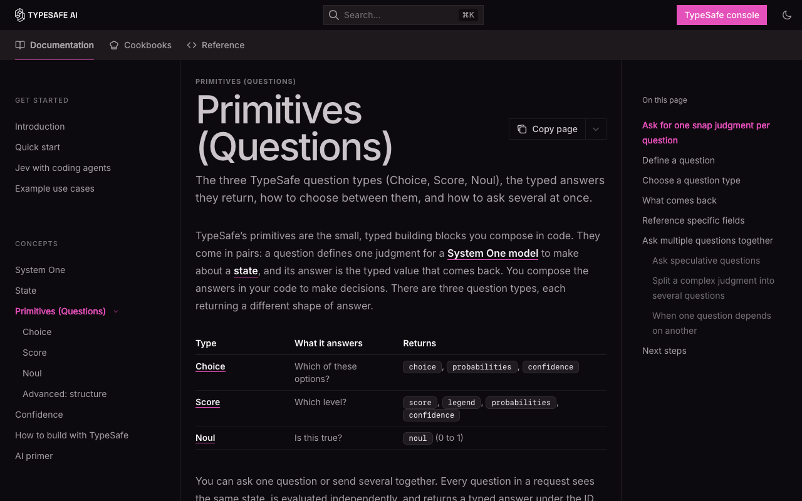
04Confidence: how sure is Jev?
If a friend says "definitely the tech team", you just go. If they say "tech… or maybe billing?", you double-check. Confidence is that tone of voice, as a number.
Use it like a traffic light: 🟢 act automatically, 🟡 act but keep a record, 🔴 ask a person (or a bigger AI).
confidence (Choice and Score only) summarises how concentrated the probability distribution is: 1.0 when all the mass is on one option, 0 when it's spread evenly. It is not the top option's probability.
For three options, the docs' demo approximates it as (3 × max_p − 1) / 2. Our real run: (3 × 0.85 − 1) / 2 = 0.775 ≈ 0.78, matching the API.
Calibration holds across many predictions: things given 0.8 happen about 80% of the time. It doesn't guarantee any single answer.
The action thresholds here (≥ 0.8 act, 0.5–0.8 act and log, < 0.5 human) are examples only. Set your own from tests on your data and from how costly a mistake is.
Thresholds should scale with risk
action = r.choices["action"]
if action.confidence < 0.5:
route_to_human(msg) # genuinely unsure: don't guess
elif action.choice == "check_balance":
show_balance() # low stakes, easy to undo
elif action.choice == "approve_transfer":
if action.confidence > 0.9:
confirm_then_execute() # high stakes needs high confidence
else:
ask_user_to_confirm()choice and skip confidence thresholds. Ignore uncertainty on branches your code won't use.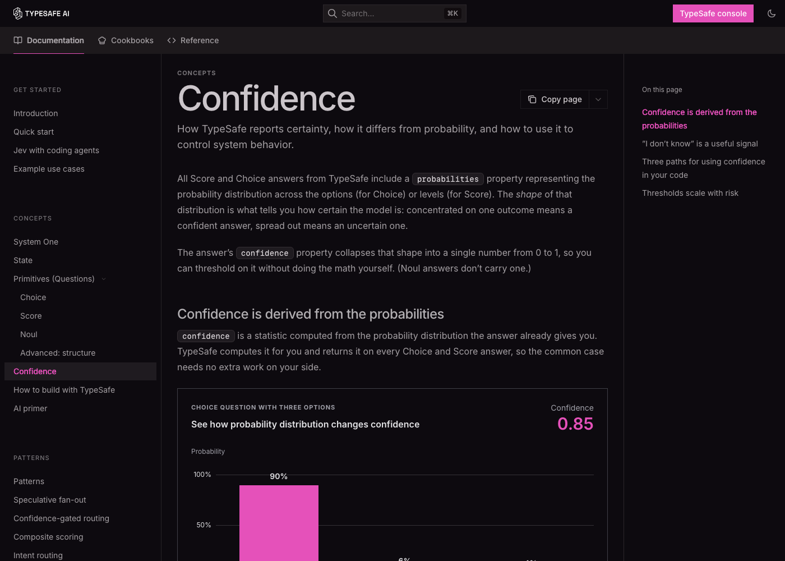
05How /typesafe:typesafe-ai works
The Claude Code skill that makes Claude an expert TypeSafe builder.
Claude Code is a very capable coder, but it doesn't automatically know TypeSafe's newest rules. The skill is a briefing pack you hand Claude before it starts: "Here's how TypeSafe works, read the latest manual, and build it the cheap, correct way."
You type /typesafe:typesafe-ai and then what you want in plain words. Claude reads the manual, plans, writes the code, and can even run cheap test calls with your key.
It doesn't turn Claude into Jev, and it doesn't swap the AI behind Claude Code. Claude stays the builder, and Jev becomes a part inside the app you build.
- A Claude Code plugin from the
typesafe-ai/skillsmarketplace. It installs aSKILL.mdunder~/.claude/plugins/cache/typesafe-ai/typesafe/<version>/skills/typesafe-ai/. - Running
/typesafe:typesafe-ai <args>loads that file into Claude's context as instructions for the current turn, and your args are passed along. - It tells Claude to treat the live docs as the source of truth: start at
docs.typesafe.ai/llms.txt, fetch pages as.md, and read the API/SDK page and the closest cookbook before writing an integration. - It gives design rules: pick the primitive by meaning, batch independent questions, keep maths/dates/lookups in code, include a no-match option, and threshold on your own data.
- The skill makes no network calls itself. Claude uses its normal tools (reading docs, Bash, editing files) under your permission settings.
Install it (Claude Code)
claude plugin marketplace add typesafe-ai/skills
claude plugin install typesafe@typesafe-ai
# later, to update:
claude plugin marketplace update typesafe-ai
claude plugin update typesafe@typesafe-ai # then restart or run /reload-pluginsUsing another agent (Codex, Cursor…)? Run npx skills add typesafe-ai/skills --skill typesafe-ai and say "use the TypeSafe skill" in your prompt.
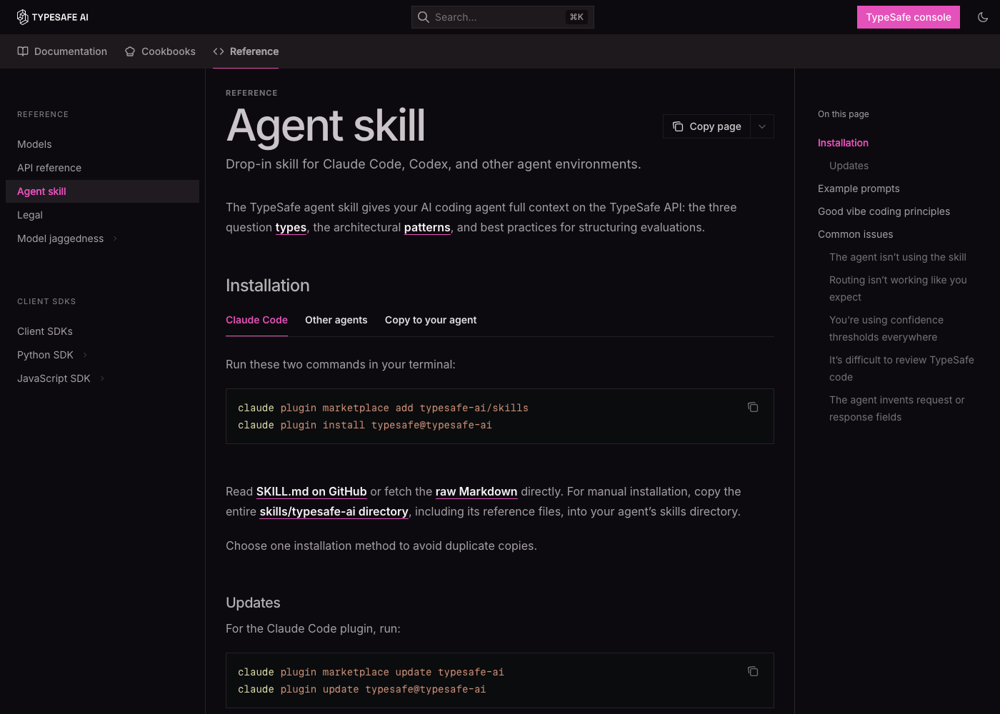
Prompts that work well
| Goal | Type this |
|---|---|
| Find where TypeSafe helps | /typesafe:typesafe-ai explore this project and find fragile parsing or if/else logic that a judgment could replace |
| Run a script | /typesafe:typesafe-ai run ~/typesafe-easy-guide/examples/first_call.sh |
| Check your setup | /typesafe:typesafe-ai is any key missing? guide me step by step |
| Experiment cheaply | /typesafe:typesafe-ai run experiments with my TYPESAFE_API_KEY and propose changes from the best results |
| Apply a cookbook | /typesafe:typesafe-ai check whether any cookbook matches my code and refactor it |
| Build something | /typesafe:typesafe-ai build an App Store review analyzer: sentiment score + one noul per topic |
06Step by step: your first app
We'll build a support-ticket sorter: it reads a customer message and decides the team, the urgency, and whether to flag a refund.
Sign up
Go to console.typesafe.ai and continue with Google or email.
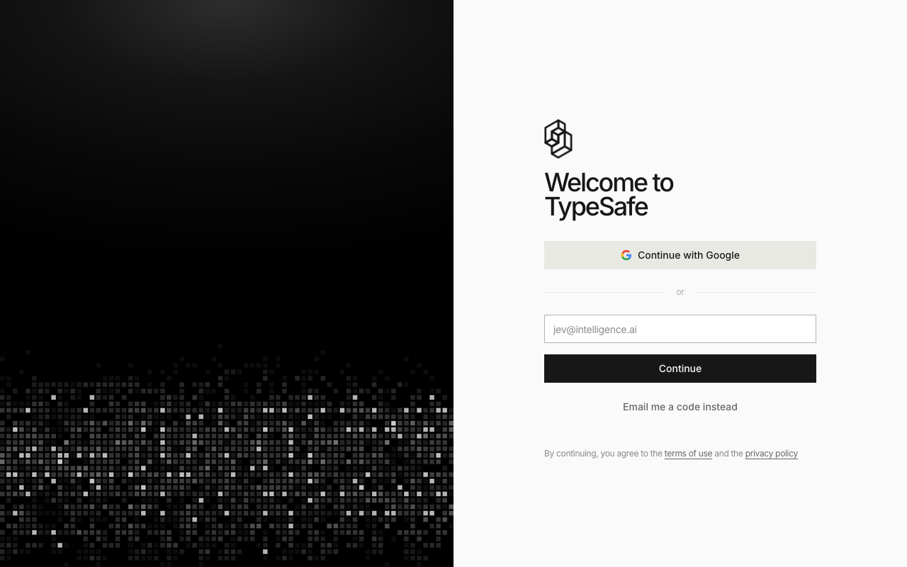
The TypeSafe console sign-in screen. Play first, with no code
Open the Playground. Paste a message as the state:
Hi, I've been trying to connect my Stripe account for 3 days and the integration keeps failing. I'm losing sales. Please help ASAP.Add a noul question:
Does this message express urgency?. Then add a Choice and a Score and watch all the answers come back together.🎯 Reword your questions here until the answers look right. It's the cheapest place to experiment.Get an API key and save it permanently
Dashboard → Keys. Adding it to
~/.zshrcmeans every new terminal has it:echo 'export TYPESAFE_API_KEY="paste-your-key-here"' >> ~/.zshrc source ~/.zshrc # check it's set (prints the length, not the key) [ -n "$TYPESAFE_API_KEY" ] && echo "key set (${#TYPESAFE_API_KEY} chars)" || echo "key NOT set"🔒 Never put the key in website or mobile frontend code. Call TypeSafe from your server.Install the SDK in a virtual environment
On a Mac with Homebrew Python, a plain
pip installis usually blocked withexternally-managed-environment. A virtual environment (.venv) is the clean fix: it's a private box for this project's packages.cd ~/typesafe-easy-guide python3 -m venv .venv # create the box (Python 3.10+) source .venv/bin/activate # step into it: prompt shows (.venv) pip install typesafe-sdk # install inside the box python -c "import typesafe_sdk; print('ok')" # JavaScript / TypeScript instead (Node 20+): npm install @typesafe-ai/sdk🔁 Runsource .venv/bin/activateagain in each new terminal before running Python examples. Python 3.13+ also puts a.gitignoreinside.venv, so it never gets committed.Ask everything in ONE call
from typesafe_sdk import Choice, Noul, Score, TypeSafeClient with TypeSafeClient() as client: # reads TYPESAFE_API_KEY r = client.system_one( state={"ticket": TICKET}, questions={ "team": Choice( instructions="Which team should handle this ticket?", criteria={ "billing": "Payment or subscription issues", "technical": "Bugs or integration problems", "sales": "Pricing or account questions", "other": "None of the above", }, ), "urgent": Noul(instructions="The message conveys urgency or time-sensitivity."), "refund": Noul(instructions="The customer asks for a refund."), "frustration": Score( instructions="How frustrated does the customer appear?", criteria=["Calm, just stating facts", "Frustrated but civil", "Very angry, strong language"], ), }, model="jev-latest", )Let code make the decision
team = r.choices["team"] urgent = r.nouls["urgent"].noul frustration = r.scores["frustration"].score queue = team.choice if team.confidence >= 0.5 else "human-review" priority = "P1" if urgent > 0.8 or frustration >= 1.5 else "P2" refund_flag = r.nouls["refund"].noul > 0.7The AI provides the evidence (numbers), and your code sets the rules. You can change a rule at any time without paying for new AI calls. Full example: examples/support_triage.py.
Test, tune, ship
Run 20–50 real messages. Where it's wrong, reword the question or make the option descriptions clearer. Pick thresholds from your results, not guesses. Log the
modelfield from each response so you know which version produced each answer.
Troubleshooting
| You see | Why | Fix |
|---|---|---|
ModuleNotFoundError: No module named 'typesafe_sdk' | The SDK isn't installed in the Python you're running | source .venv/bin/activate, then pip install typesafe-sdk |
error: externally-managed-environment | Homebrew protects the system Python | Use a venv (step 4) |
401 / authentication error | The key is missing, mistyped or revoked | Check it with the length command in step 3, or make a new key |
429 Too Many Requests | Over the token/s or requests/min limit | The SDK retries automatically. Batch more questions per call. |
| The key works in one terminal but not another | It was only exported, not saved | Add it to ~/.zshrc (step 3) |
| Answers look "off" | A vague question, or no fitting option | Make the condition exact and add an other option (see Limits) |
07A real session, start to finish
This is what setting up with /typesafe:typesafe-ai in Claude Code actually looked like. The outputs below are real.
① "Run the first-call script"
Claude read the script first, checked that the key was set without printing it, then ran it:
$ [ -n "$TYPESAFE_API_KEY" ] && echo "key set (len ${#TYPESAFE_API_KEY})" key set (len 108) $ bash examples/first_call.sh | jq . { "model": "jev-1.13.0", "answers": { "is_urgent": { "type": "noul", "noul": 0.99 }, "department": { "type": "choice", "choice": "technical", "confidence": 0.78, "probabilities": { "sales": 0.0, "technical": 0.85, "billing": 0.15 } } }, "usage": { "input_tokens": 376, "output_tokens": 57 } } # 376 billed tokens × $0.042/1M ≈ $0.0000158 for this call
How to read it: urgency is almost certain. The ticket goes to technical, with a small billing share because Stripe is a payments service. Confidence (0.78) is lower than the top probability (0.85) because it measures how peaked the whole distribution is.
② "Is any other key missing?"
Claude searched the guide for every *_KEY reference (there's only TYPESAFE_API_KEY) and checked the machine:
$ python3 --version Python 3.14.6 # ✓ needs 3.10+ $ python3 -c "import typesafe_sdk" ModuleNotFoundError: No module named 'typesafe_sdk' # ✗ SDK missing $ grep -l TYPESAFE_API_KEY ~/.zshrc /Users/you/.zshrc # ✓ key saved permanently
Only the SDK was missing, so Claude gave the venv steps from section 6.
③ "I did all, please check"
$ .venv/bin/pip show typesafe-sdk | grep Version Version: 0.7.1 # ✓ $ .venv/bin/python examples/support_triage.py queue=technical priority=P1 refund_flag=False raw: team=technical (0.86) urgent=0.98 refund=0.02 frustration=1.00
④ "Do I need Claude API keys too?"
No. The TypeSafe examples only call TypeSafe, and Claude Code uses your Claude login. An LLM key is only needed if your app must write text. Here the plan is Groq's free tier, which fits the "big LLM" slot (see section 11).
08How it saves money and tokens
Where the savings come from, with the maths.
The pizza rule. If you order 13 toppings in 13 separate deliveries, you pay 13 delivery fees. Order once with all 13 and you pay one fee. Your document is the delivery fee, and each question is a topping.
The receipt rule. You only pay for what you send Jev, not for what it sends back. Short, focused inputs mean small bills.
The specialist rule. Don't pay a surgeon to take your temperature. Jev takes the temperature, and the expensive AI only sees the patients who need it.
Jev cost per request = input_tokens × $0.042 / 1M, and output costs $0.
With a document of D tokens and N questions of q tokens each:
- One call per question:
N × (D + q) - All in one call:
D + N × q
When D ≫ q, the saving approaches N×. TypeSafe's GDPR cookbook (D ≈ 11k, N = 13) measured 12.2× cheaper and 10× faster, with identical answers.
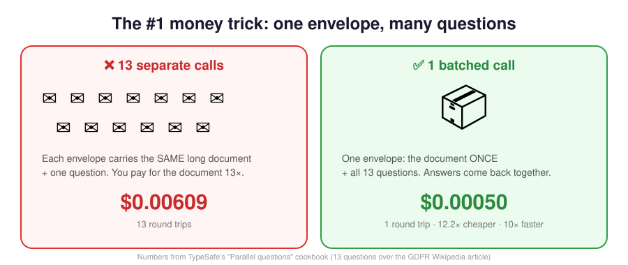
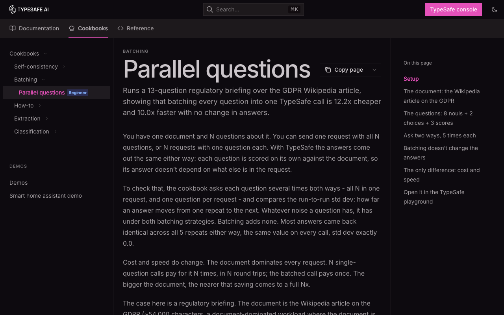
The six token levers
| Lever | What to do | Why it saves |
|---|---|---|
| 📦 Batch | Put all independent questions about the same state in one call, including speculative ones ("if this is a refund, which reason?") | You pay for the state once. Code ignores the branches it doesn't need. |
| ✂️ Trim the state | Filter and retrieve in code, and send named fields: {"ticket":…, "plan":"pro"} | Fewer input tokens, and better accuracy (irrelevant text distracts Jev) |
| 💻 Code first | Maths, dates, counting, regex, lookups | $0, and more accurate than any model |
| 👉 Select, don't generate | Code finds the candidate values; a Choice picks one | Jev reads a short list, can't invent values, and output is free |
| 💾 Store raw answers | Save the probabilities and scores in your database | New weights, filters or thresholds later don't need new calls |
| 🪜 Cascade | Cheap model → Jev verifies → expensive model only when a flag fires | Most of the big model's quality, at a fraction of its cost |
Real numbers from this guide's own run
| Volume | Jev (≈376 tokens per ticket) | What that means |
|---|---|---|
| 1 ticket | ≈ $0.000016 | Too small to see on a bill |
| 1,000 tickets/day | ≈ $0.016/day · $0.47/month | Less than a coffee a month |
| 1,000,000 tickets | ≈ $15.80 | A big-LLM-for-everything design would cost many times more |
09Try it: cost calculator
Change the numbers and see why batching and Jev matter. The defaults reproduce TypeSafe's GDPR cookbook (≈11k-token document, 13 questions).
Estimate only. Jev: $0.042 per 1M input tokens, output free (the jev-1.13 rate on docs.typesafe.ai/models, Sept 2026). "Big LLM": $5 per 1M input + $30 per 1M output (the gpt-5.5 rate quoted in TypeSafe's Sept 2026 cookbooks), with all questions in one prompt and ~30 output tokens per answer. Groq's free tier costs $0 but has rate limits, which is why sending fewer calls to it matters. Check current prices before planning a budget.
10The 7 golden rules for low cost + high speed
Rule 2 as a flowchart: which tool for which job?
Rule 4 as a picture: cheap first, expensive only if needed
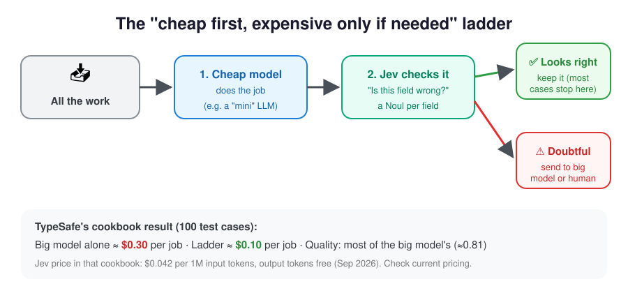
All questions about the same data go in one call.
Maths, dates, lookups and rules cost $0. Use AI only for understanding.
Code finds the candidates (every date in an email), and Jev picks the right one. It's cheaper and can't invent values.
A cheap model does the work, Jev checks it, and only doubtful cases go to the big model.
Named fields like {"ticket":…,"policy":…}, not your whole database.
Save the raw numbers. New weights or filters later need no new AI calls.
🟢 act · 🟡 act and log · 🔴 human or bigger AI. Pay for expensive help only on hard cases.
11Where Groq (or any big LLM) fits
Jev never writes text. When your app needs a written reply, a summary or deep reasoning, call an LLM, but only for the cases that need it.
Jev is the receptionist: it sorts every visitor in a split second. The LLM is the specialist you only call in when someone needs a proper letter written.
Groq's free tier lets you make a limited number of calls per minute and per day. Because Jev handles the sorting, most visitors never reach the specialist, so you stay under the free limits.
- Jev returns typed judgments. Code decides whether an LLM call is needed at all.
- Pass Jev's decision to the LLM as context (the team, urgency, refund flag), so the prompt is short and focused.
- Optional: send the LLM's draft back to Jev as a verifier (e.g. a Noul "does the reply promise a refund the policy doesn't allow?").
- Keep
GROQ_API_KEYserver-side, just like the TypeSafe key.
Set up Groq (only when you need it)
# 1. Create a key at https://console.groq.com/keys, then save it:
echo 'export GROQ_API_KEY="paste-key-here"' >> ~/.zshrc
source ~/.zshrc
# 2. Install the SDK in the same venv
cd ~/typesafe-easy-guide && source .venv/bin/activate
pip install groqTemplate: Jev triages, Groq writes only when needed
from groq import Groq
from typesafe_sdk import Choice, Noul, TypeSafeClient
with TypeSafeClient() as ts:
r = ts.system_one(
state={"ticket": TICKET},
questions={
"team": Choice(instructions="Which team should handle this ticket?",
criteria={"billing": "Payment issues", "technical": "Bugs or integrations",
"other": "None of the above"}),
"needs_reply": Noul(instructions="The customer asks a question that needs a written answer."),
},
model="jev-latest",
)
if r.nouls["needs_reply"].noul > 0.7: # most tickets skip the LLM entirely
groq = Groq() # reads GROQ_API_KEY
draft = groq.chat.completions.create(
model="llama-3.3-70b-versatile", # pick a current model at console.groq.com
messages=[
{"role": "system", "content": f"You are a {r.choices['team'].choice} support agent. Reply briefly and kindly."},
{"role": "user", "content": TICKET},
],
).choices[0].message.content
print(draft)12Known limits: where Jev stumbles, and the fix
From TypeSafe's own "Jev 1.13 jaggedness" page. Knowing these up front saves hours.
| Weak spot | Plain English | Do this instead |
|---|---|---|
| Literal reading | It answers the words you wrote, not what you meant | Write the exact condition, and put boundary cases in the criteria |
| Maths and counting | It's not a calculator | Do arithmetic and counting in code. To count matches, ask one Noul per item and add them up |
| Dates and times | It reads dates as words, not as a timeline | Extract the parts with a Choice, then compare them in code |
| Indirection | "A property of a property" confuses it | Fewer hops. Name the exact field in the state |
| Huge, noisy state | Irrelevant text distracts it | Filter first, or use a Noul to check relevance |
| Adversarial text | Injected instructions in the data can sway it | Precise criteria. Test edge cases before launch |
| Contradictory criteria | A Noul where "true" means "no" is confusing | Keep the instructions and criteria aligned |
| Structural invariants | Asking the same thing as a Noul vs a Choice can give different numbers | Ask each decision one way. Enforce logic in code |
| Generation | It can't write | Use an LLM (e.g. Groq) for text |
Full details: docs.typesafe.ai/model-jaggedness/jev-1.13
13The "optimal" app blueprint
| Layer | Job | Cost | Speed |
|---|---|---|---|
| 💻 Code | steps, rules, maths, lookups | free | instant |
| ⚡ Jev | understanding: pick / yes-no / level | tiny ($0.042 per 1M input tokens) | ~100 ms |
| 🧑🏫 Big LLM / Groq | writing and deep reasoning | highest, or free but rate-limited | seconds |
| 🙋 Human | truly unsure cases | most expensive | slowest |
14Real app ideas
| App | What Jev decides | Tool | Pattern / cookbook |
|---|---|---|---|
| 📨 Smart inbox | folder, urgent?, spam? | Choice + Noul | Intent routing |
| ⭐ App Store review analyzer | sentiment level; mentions crashes / price / a feature? | Score + Noul per topic | Composite scoring |
| 🔍 Better search | how relevant each result is | Score per result | Re-ranking |
| 🤖 Voice / chat commands | which action + its settings | Choice | Function calling |
| 📑 Invoice / form reader | the right value among candidates code found | Choice | Value extraction |
| ✅ AI fact-checker | does this source support this sentence? | Choice / Noul | Citation check |
| 🛡️ LLM guardrails | is this input or output harmful / off-policy? | Noul + Score | Guardrails |
| 🪜 Cheap extraction | is the cheap model's field wrong? | Noul per field | SDE cascade |
| 🧑💼 Resume screener | fit per skill; code weights them | Score per skill | Composite scoring |
All recipes: docs.typesafe.ai/cookbooks. With the skill installed, try /typesafe:typesafe-ai build the review analyzer idea in ~/development.
15Mistakes to avoid
| ❌ Don't | ✅ Do |
|---|---|
| One huge, vague question ("Is this good?") | Small, clear ones ("Is it polite?", "Is it on-topic?") |
| One call per question | Batch them all in one call |
| Treat Noul 0.5 as "medium" | 0.5 = can't tell. Use Score for "how much" |
| Treat confidence as "the chance it's right" | It measures how peaked the distribution is. Validate accuracy on your data |
| Forget a "none of these" option | Add other / none |
| Ask Jev to do maths or compare dates | Do it in code |
| Put an API key in frontend code | Call TypeSafe and Groq from your server |
| Copy thresholds from examples | Tune them on your own real data |
| Use a big LLM for sorting or checking | Use Jev, and keep the big LLM for writing |
| Scatter questions across your code | Keep all questions and thresholds in one file for review |
Use jev-latest after tuning thresholds | Pin jev-1.13.0 and upgrade on your own schedule |
16FAQ
Do I need a Claude / Anthropic API key?
No. The TypeSafe examples only call TypeSafe, and Claude Code uses your Claude login. You'd only need an Anthropic key if your own app code called Claude. For writing steps, a free Groq key works too.
Can I use Jev as the model behind Claude Code or Cursor?
No. Jev doesn't generate text or code. Use your coding agent as normal, with the TypeSafe skill, to write apps that call Jev.
Does the /typesafe:typesafe-ai skill cost money?
The skill is free. It's just instructions for Claude. Test calls Claude makes to TypeSafe with your key are billed at the normal (tiny) Jev rate.
Is my data used to train Jev?
No, according to TypeSafe's Models page. Enterprise plans offer zero data retention. See docs.typesafe.ai/legal.
Can Jev read images or PDFs?
Text only for now. Extract the text (or describe the image with another tool) first, then send it as state.
Why is confidence 0.78 when the top probability is 0.85?
Confidence measures how concentrated the whole distribution is, not the top value. With three options, 85/15/0 gives about (3×0.85−1)/2 ≈ 0.78.
My answers changed without any code change. Why?
jev-latest is an alias that moves to new releases. Log the model field from each response, and pin a versioned ID in production.
Does it work in languages other than English?
Yes, but English is where it's most accurate. Test on your own content and watch confidence closely.
17Cheat sheet
KEYS TYPESAFE_API_KEY required · Claude key not needed · GROQ_API_KEY optional
SETUP ~/.zshrc for keys · python3 -m venv .venv · pip install typesafe-sdk
SKILL /typesafe:typesafe-ai <what you want> (reads live docs, then builds)
CODE does steps & rules → $0
JEV makes quick judgments → $0.042 per 1M input tokens, output free, ~100 ms
LLM writes / reasons deeply → $$$ or rate-limited free tier, use rarely
Choice → pick one (+ probabilities, confidence) · add "other"
Noul → P(yes) 0..1 · 0.5 = can't tell
Score → position on 2-10 levels (+ confidence) · levels describe concrete situations
1 call, many questions → pay for your data once (≈N× cheaper)
Pick, don't generate → cheaper + no made-up values
Cheap → check → escalate → big-model quality, less $
Save raw scores → change rules for free
Low confidence → human / bigger model
Maths, dates, counting → always in code🔗 Docs · Docs index (llms.txt) · Console & Playground · Models & pricing · Agent skill · Batching proof · Cascade recipe · This guide on GitHub